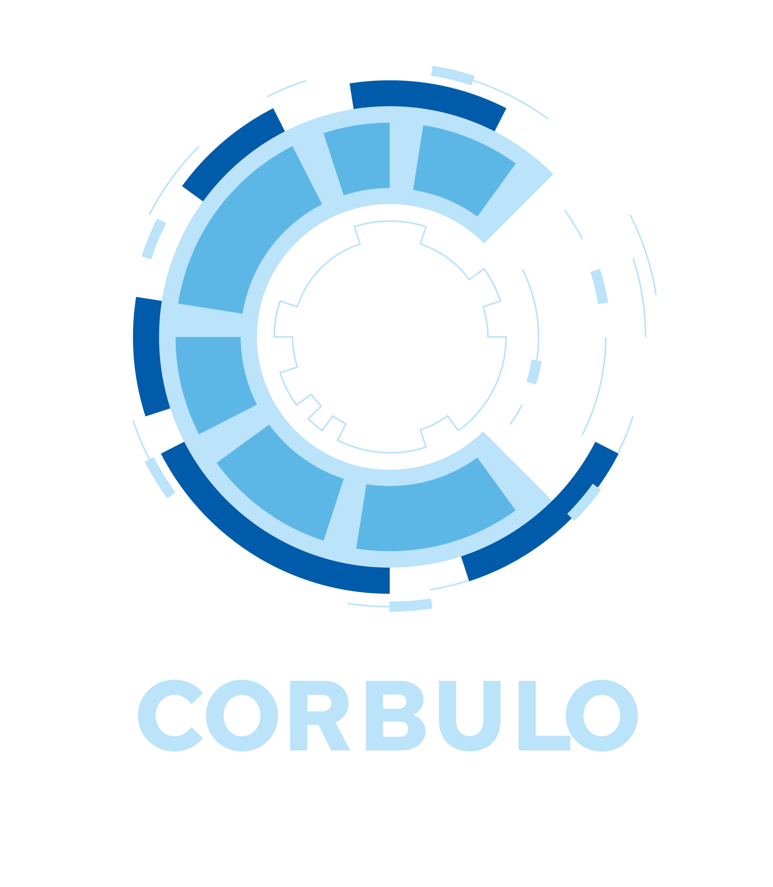

Ontdek welke beroepen en mbo-opleidingen bij jou passen. Je ziet steeds een plaatje met twee situaties. Kies wat jij het leukst vindt.
30 vragen · ongeveer 5 minuten · er is geen goed of fout
Vul je gegevens in. Daarna zie je je uitslag. Je kunt die ook opslaan als PDF.
📧 Je e-mailadres invullen hoeft niet.
De verkenner werkt met zes types. Samen heten ze RIASOC. Elk type staat voor een soort werk. Jij koos steeds tussen twee situaties. Zo ziet de verkenner welke types het best bij jou passen.
Bijna niemand is maar één type. Meestal passen er twee of drie bij je. Gebruik je uitslag om te vertellen wat je leuk vindt. Kies daarna welke opleidingen je wilt bekijken.
De uitslag geeft een richting. Je cijfers, je ervaring en wat je zelf wilt tellen ook mee. Zoek daarna verder. Ga naar open dagen en praat met mensen die het werk doen.
Neem je uitslag mee. Je mentor of decaan kent jou en de opleidingen. Samen kies je welke open dagen of meeloopdagen je gaat doen.